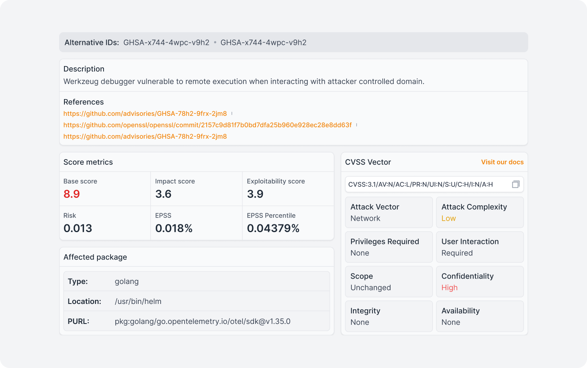
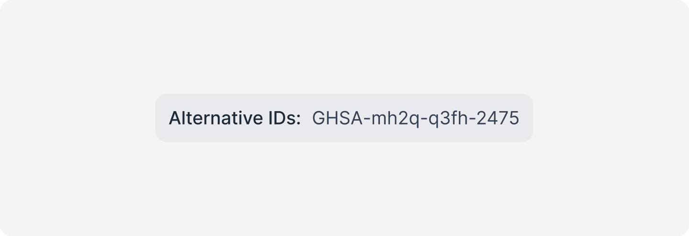
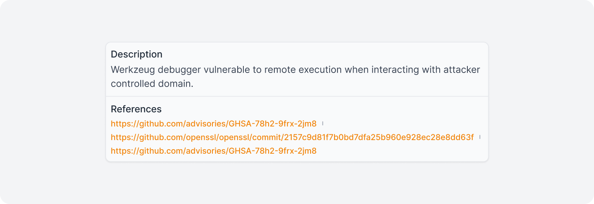
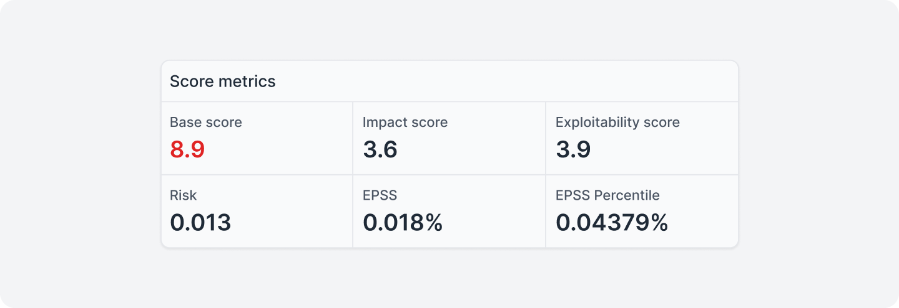
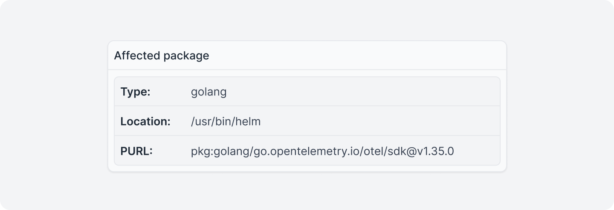
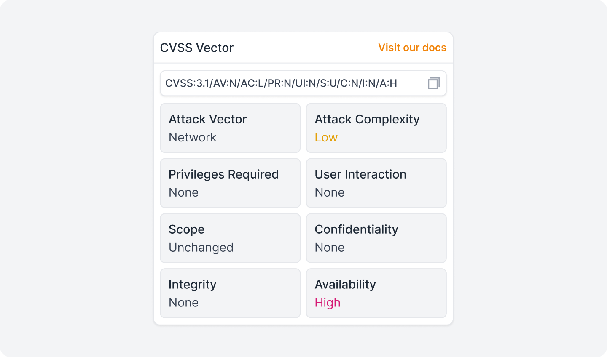
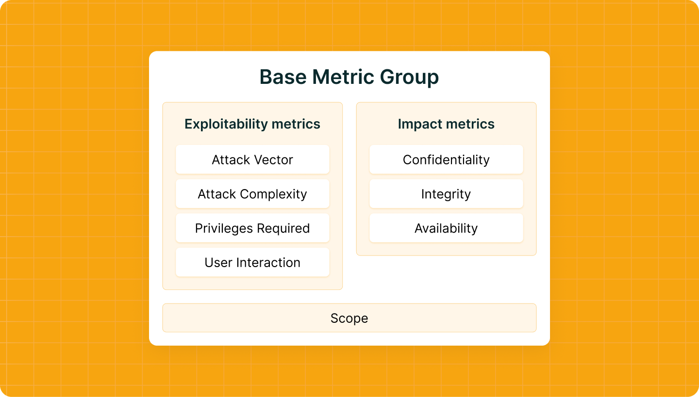

Vulnerability Attributes¶
Identifying that an image has vulnerabilities is just the beginning. What determines whether your team will fix the right problem, in the right order, is understanding what each attribute says and what it does not say.
The vulnerability details panel in Quor supports this prioritization process by organizing all the information about a vulnerability into six groups:
- Alternative identification.
- Description.
- Severity and exploitation metrics.
- Package location.
- CVSS Vector.
- External references.
These attributes consolidate, in a single view, data distributed across different databases and registries (NVD, GHSA, FIRST, and the package repository), eliminating the need for manual lookups in external sources during triage.

Alternative ID¶
Secondary identifier of the vulnerability in a database different from the one that originated the record. The most common case is the coexistence of a GHSA ID (GitHub Security Advisory) and a CVE ID (NVD - National Vulnerability Database), issued independently for the same vulnerability.

Description & References¶
A direct text describing the behavior of the vulnerability: what is affected; how the problem manifests; and what the impact vector is, in natural language. The description comes from the original source: GHSA, NVD, or the package maintainer itself.
It is the first reading point before getting into the numbers. A CVE with a Base Score of 7.5 affecting an internal telemetry subsystem has a very different operational impact than one with the same score affecting the authentication layer, and the description is what makes that clear.

Metrics¶
The metrics block brings together the quantitative indicators that determine the severity of the vulnerability and the actual probability of exploitation. There are two dimensions here that should not be confused: severity (how serious the potential damage is) and probability (how likely it is that someone will actively exploit it).

Base score¶
Score calculated from the CVSS Vector. Scale from 0 to 10, categorized as:
None: 0.0 | Low: 0.1–3.9 | Medium: 4.0–6.9 | High: 7.0–8.9 | Critical: 9.0–10.0
Represents the intrinsic severity of the vulnerability, without considering the runtime environment.
Impact Score¶
Subcomponent of the Base Score. Measures the magnitude of the potential impact on Confidentiality, Integrity, and Availability of the affected system.
Exploitability Score¶
Subcomponent of the Base Score. Measures the ease of exploitation based on attack vectors, complexity, required privileges, and user interaction — the same parameters detailed in the CVSS Vector.
Risk¶
Probability of exploitation adjusted to the context of the image and the stack. Complements EPSS with environment-specific factors.
EPSS¶
Exploit Prediction Scoring System, maintained by FIRST. Estimates the probability of active exploitation of the CVE within the next 30 days based on threat intelligence data. Scale from 0 to 1 (0% to 100%).
EPSS Percentile¶
Percentile position of the CVE within the total set of vulnerabilities tracked by the EPSS model. Indicates the relative magnitude of the score; a low absolute value can represent a high percentile depending on the overall distribution.
Important
EPSS and EPSS Percentile together are the most relevant fields for separating what needs immediate attention from what can wait until the next update cycle.
Package details¶
Precise location of the vulnerable package within the image.

Type¶
Package ecosystem: golang, npm, pip, deb, rpm, among others. Determines the package manager and the applicable update process.
Location¶
Absolute path of the binary or library within the image where the package was detected. Allows you to distinguish whether the artifact is present at runtime or exclusively in the build process.
PURL¶
Package URL, an identifier standardized by the PURL Spec that references the package unambiguously: ecosystem, namespace, name, and version in a single string (e.g., pkg:golang/go.opentelemetry.io/otel@v1.39.0). It is the reference format used by automation tools and admission policies, and corresponds directly to the entries of the image's SBOM.
CVSS Vector¶
CVSS (Common Vulnerability Scoring System) is the open standard for communicating the characteristics and severity of software vulnerabilities. The vector string is a compact textual representation of all values assigned to each metric, and should always be displayed alongside the score.
It begins with the prefix CVSS:3.1/ followed by each metric in the format KEY:VALUE, separated by /.

In general terms, the metrics are divided into three groups: Base, Temporal, and Environmental. The Base metrics represent the intrinsic characteristics of the vulnerability, constant over time and independent of the environment.
Information
Quor exclusively displays the metrics from the Base group, which are the only mandatory ones and the most widely published.

Exploitability Metrics¶
These metrics describe the conditions necessary for an attacker to be able to exploit the vulnerability. They are evaluated from the point of view of the vulnerable component.
Attack Vector (AV)
Reflects the context by which exploitation of the vulnerability is possible. The more remote the attacker can be, the higher the base score, as the number of potential attackers increases.
Network (N): The vulnerable component is accessible over the network and the set of potential attackers extends to the Internet as a whole.
Adjacent (A): The vulnerable component is accessible over the network, but the attack is limited to a logically adjacent topology, such as the same physical network (Bluetooth, Wi-Fi), local subnet, or isolated administrative domain (VPN, MPLS).
Local (L): The vulnerable component is not accessible over the network. The attacker acts via read, write, or execute capabilities, accessing the system locally (keyboard, console) or remotely (SSH).
Physical (P): The attack requires the attacker to physically touch or manipulate the vulnerable component. The physical interaction can be brief or persistent.
Attack Complexity (AC)¶
Describes the conditions beyond the attacker's control that must exist for the exploit to be successful. The simpler the attack, the higher the score. This metric does not include user interaction; that is captured separately in UI.
Low (L): No special access conditions or extenuating circumstances exist. The attacker can expect repeatable success when attacking the vulnerable component; the exploit works in a consistent and predictable manner.
High (H): A successful attack depends on conditions beyond the attacker's control. This means that the attack cannot simply be performed at will; it requires a measurable investment of effort in preparation or execution.
Privileges Required (PR)¶
Describes the level of privileges an attacker must have before successfully exploiting the vulnerability. The fewer privileges required, the higher the base score.
None (N): The attacker requires no prior access. No authentication or access to settings or files of the vulnerable system is required to perform the attack. It is the typical value for vulnerabilities with embedded credentials or that rely on social engineering (such as reflected XSS or CSRF).
Low (L): The attacker needs privileges that provide basic user capabilities, normally affecting only settings and files belonging to the user themselves, or with access to non-sensitive resources.
High (H): The attacker needs privileges that provide significant control over the vulnerable component, such as administrative access, allowing access to system-wide settings and files.
User Interaction (UI)¶
Captures whether a human user, other than the attacker, must participate for the exploitation to succeed. When no interaction is required, the score is higher.
None (N): The vulnerable system can be exploited without any interaction from another user. The attacker acts autonomously.
Required (R): Successful exploitation requires a user to perform some action before the vulnerability can be exploited, for example, an attack that is only possible while a system administrator is performing the installation of an application.
Scope (S)¶
Captures whether a vulnerability in a vulnerable component impacts resources in components that are outside its security scope.
Unchanged (U): The exploited vulnerability can only affect resources managed by the same security authority. The vulnerable component and the impacted component are the same, or both are under the same authority.
Changed (C): The exploited vulnerability can affect resources beyond the security scope of the vulnerable component's authority. The vulnerable component and the impacted component are different and managed by distinct security authorities.
Impact Metrics¶
These metrics capture the effects of a successful exploitation. Analysts must limit impacts to a reasonable, final outcome that an attacker is able to achieve with certainty.
Confidentiality (C)¶
Measures the impact on the confidentiality of the information managed by the affected component. Confidentiality refers to the limitation of access to and disclosure of information only to authorized users.
High (H): There is total loss of confidentiality, resulting in all resources of the impacted component being disclosed to the attacker.
Low (L): There is some loss of confidentiality. The attacker gains access to some restricted information, but does not control which information is obtained, or the extent of the loss is limited. The disclosure does not cause direct, severe loss to the impacted component.
None (N): There is no loss of confidentiality in the impacted component.
Integrity (I)¶
Measures the integrity impact of a successful exploitation. Integrity refers to the trustworthiness and veracity of the information.
High (H): There is total loss of integrity, or complete loss of protection. For example, the attacker can modify any files protected by the impacted component.
Low (L): Modification of data is possible, but the attacker has no control over the consequences of the modification, or the volume of modification is limited. The data modification has no direct, severe impact on the impacted component.
None (N): There is no loss of integrity in the impacted component.
Availability (A)¶
Measures the impact on the availability of the impacted component. Unlike C and I, which refer to the loss of data, this metric refers to the loss of access to the component itself, such as a network service (web, database, email).
High (H): There is total loss of availability. The attacker can completely deny access to the resources of the impacted component in a sustained way (while the attack continues) or persistently (the condition persists even after the attack).
Low (L): Performance is reduced or disruptions occur in the availability of resources. Even if repeated exploitation is possible, the attacker does not have the ability to completely deny service to legitimate users.
None (N): There is no impact on availability in the impacted component.